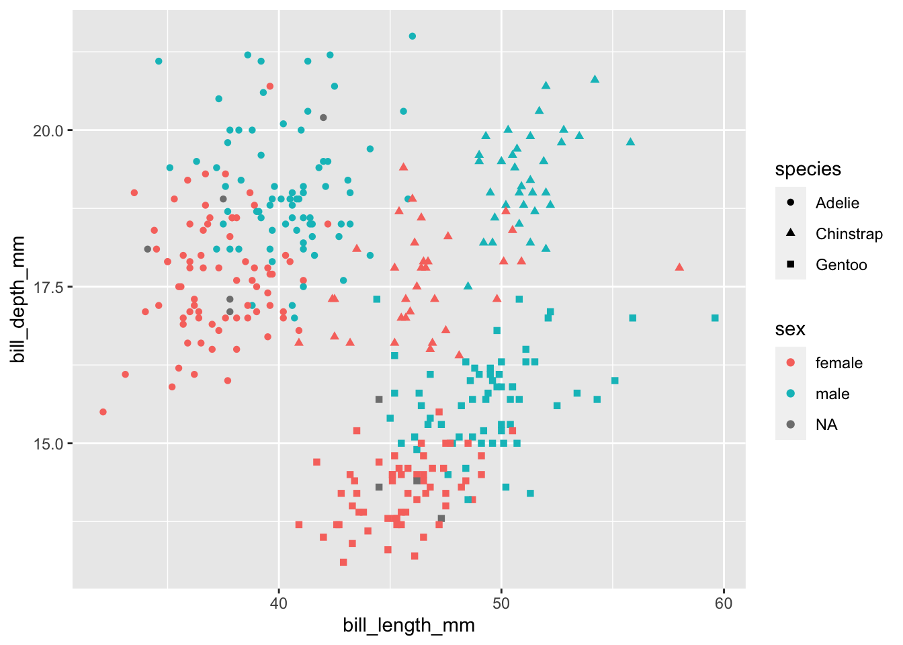

14 Using points, lines, colours, and shapes (#scales)
In the previous lesson you learned the computer skills to make a huge variety of plots. Here we will focus on how to use colors, shapes, lines, and text effectively on a visualization.
14.1 Points and shapes
14.1.4 Shapes, colours, and fills
penguins %>% ggplot(aes(x = bill_length_mm, y= bill_depth_mm,
color = sex, shape = species)) + geom_point()## Warning: Removed 2 rows containing missing values (geom_point).
14.5 Further reading
- Wilke. Chapter 4. Color scales.
- Healy. Sections 1.3-1.5. Perception and Decoding